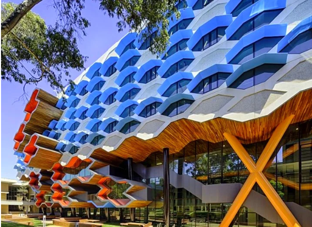
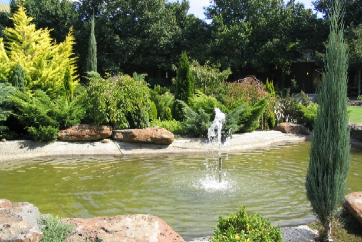

Our vision
The pandemic has shaken the world, and its tremors have extended to Australia's higher education system,
including La Trobe. We need to respond comprehensively and positively,
ensuring that our actions equip our university to surmount current difficulties and remain sustainable,
valued and relevant as the world returns to normalcy. This Plan sets out the University’s
vision and strategies for the coming ten years.
La Trobe is a university known for making a positive difference in the lives of our students,
partners and communities. We will become an even more valued and relevant university because of the way we
respond to their needs in this time of great local and national crisis.
Our aim is to emerge as a more resilient, future-focused and necessarily more efficient institution that
will thrive in a post-COVID world by being more sharply focused on the needs of our community, and by playing to
our strengths in teaching and research. The Strategic Plan is a living document that we will review periodically
to ensure it remains relevant to our circumstances.

Art Galleries:
La Trobe University has a rich collection of art,
with several galleries located across the campus. The university's Art Collection features over 2,500 works of art,
including paintings, prints, sculptures, ceramics, and textiles.
Many of these works have been acquired through the generosity of donors,
and the collection includes pieces from renowned Australian artists such as Sidney Nolan,
John Brack, and Fred Williams.
The university's primary gallery, the La Trobe University Museum of Art, is located in the Borchardt Library
building and hosts a range of exhibitions throughout the year. The museum's collection includes works from the 20th and 21st centuries, with a particular focus on contemporary Australian art. In addition to the museum, there are several other galleries located on the campus, including the Visual Arts Centre,
the Phyllis Palmer Gallery, and the Living Museum of the West.
Delegates attending the AGM are encouraged to visit the university's galleries and explore the diverse range of works on display.
Admission to the galleries is free, and the exhibitions are open to the public.

Local Gardens::
La Trobe University is surrounded by beautiful gardens, parks, and natural reserves that provide a peaceful and serene environment for students, staff, and visitors. The university has several
gardens and natural areas on campus, including the Wildlife Sanctuary, the Agora Courtyard, and the Sensory Garden.
The Wildlife Sanctuary is a 30-hectare reserve that is home to over 180 species of native animals and plants. Visitors can explore the sanctuary on walking trails that wind through the woodland,
wetland, and grassland habitats. The Agora Courtyard is a
landscaped garden that features a variety of Australian native plants and is a popular spot for picnics and gatherings.
The Sensory Garden is a unique garden that provides an immersive experience for visitors. The garden features a range of plants that stimulate the senses, including fragrant herbs, colourful flowers, and textured foliage. The garden also includes features such as wind chimes,
bird feeders, and a water feature to create a tranquil and sensory-rich environment.

Other Facilities:
In addition to the beautiful gardens and art galleries, La Trobe University offers a range of other facilities for students, staff, and visitors. These facilities
are designed to enhance the university experience and provide a range of services and amenities to the community.
The university has several libraries on campus that provide access to extensive collections of books, journals, and electronic resources.
The libraries also offer study spaces, computer labs, and research support services.
La Trobe University also has several sports and fitness facilities, including a gym, indoor pool,
and tennis courts. The university also has a range of sporting clubs and teams that students and staff can join.
For those who are interested in the performing arts, the university has a theatre that hosts a variety of productions throughout the year. The theatre also hosts film screenings, music performances,
and other cultural events.
The university has a range of food and beverage options on campus, including cafes, restaurants, and food trucks. These options cater to a variety of
dietary requirements and provide a convenient and affordable way to refuel during the day.
Conference Location:
The InfoSysAnalysis AGM will be held at the Beth Gleeson Building, located within the La Trobe University campus in Bundoora,
a northern suburb of Melbourne.
This modern and spacious facility offers a range of lecture theatres and meeting rooms, providing the perfect venue for the AGM.
The Beth Gleeson Building is conveniently located near a range of accommodation options, including hotels and serviced apartments.
There are also several cafes and restaurants nearby, providing ample dining options for attendees.
The campus is easily accessible by car, with ample on-site parking available. For those who prefer public transport,
the campus is serviced by several bus routes, with a bus stop located just a short walk from the conference venue.

Professor John Dewar
Professor John Dewar AO is the Vice-Chancellor and President of La Trobe University, a position he has held since January 2012.
Professor Dewar is a graduate of the University of Oxford, where he was also a Fellow of Hertford College from 1990-1995. He taught at the Universities of Lancaster and Warwick in the UK, and worked for the London law firms Allen & Overy and Farrer & Co.
Professor Dewar came to Australia in 1995, and held senior leadership positions at Griffith University and the University of Melbourne, where he was Provost, before taking up the position of Vice-Chancellor of La Trobe.
Professor Dewar is Chair of Universities Australia. He holds a number of other Directorships including The Olivia Newton-John Cancer Research Institute, The Committee for Melbourne, and the Foundation for Australian Studies in China. He is also a member of the University Foreign Interference Taskforce (UFIT),
the University of Lincoln’s 21st Century Lab Higher Education Reference Group, and the Champions of Change Coalition.